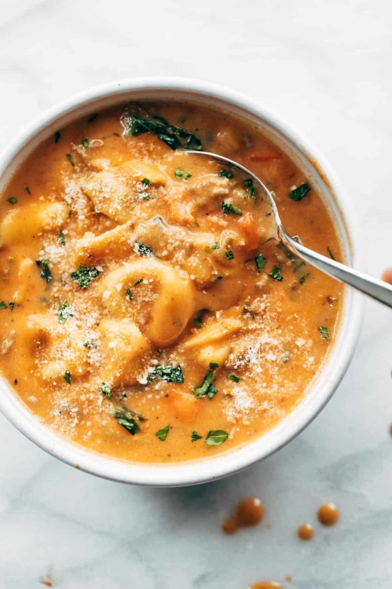

Creamy Tortellini Soup

Description
Creamy Tortellini Soup that is comforting, cozy, and so yummy! Rich and creamy tomato broth,
cheesy tortellini, fresh spinach, and Italian sausage.
Recipe Credits
Pinch of Yum Blog: Ang's Creamy Tortellini Soup
Ingredients
- 1 lb. Italian sausage
- 1 small yellow onion, diced
- 2 celery stalks, diced
- 2 large carrots, peeled and diced
- 3 garlic cloves, minced
- 1 teaspoon kosher sea salt
- 1/2 teaspoon ground black pepper
- 1/2 teaspoon Italian seasoning
- 1 teaspoon fennel seed, crushed or chopped
- 1 6-oz. can tomato paste
- 1/2 cup dry white wine
- 1/2 cup all-purpose flour
- 6-7 cups chicken broth
- 14 oz. refrigerated cheese tortellini
- 2 cups half and half or heavy cream
- 1 handful chopped fresh spinach
Steps
- In a large stockpot set over medium-high, cook the sausage, breaking up into little pieces.
When sausage is mostly browned, add onion, celery and carrot, sauté for 5 minutes or until the
vegetables are soft.
- Add the garlic, spices, and tomato paste; sauté for an additional 3-5 minutes, or until fragrant,
stirring occasionally to prevent it from burning.
- Add wine and let it cook out for a few minutes. Stir the flour into the sausage and cook for 1 minute.
It'll be sticky and dry. Gradually add in the chicken broth, stir to combine. Continue cooking until the
mixture reaches a simmer, then reduce heat to low and simmer for 15 minutes.
- Add the cream, then bring it to a low simmer. Add the tortellini and spinach. Cook just until tortellini is
al dente, per package directions. Serve with fresh parsley and Parmesan and dunk with cheese bread!
Oh my goodness. This is living.